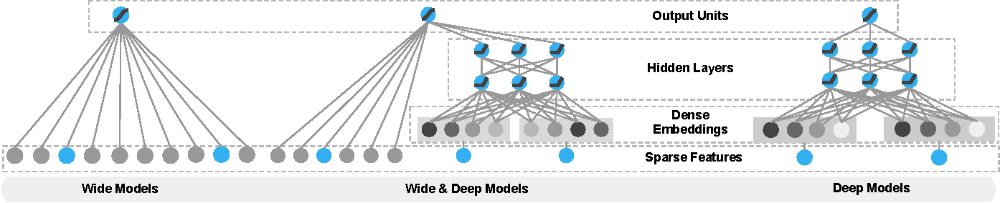

Commonly Used tf.Keras Functionality
Contents
Commonly Used tf.Keras Functionality#
This notebooks contains commonly used tf.keras functionality to develop a neural network model using keras as the API and tensorflow as the backend.
Importing Modules#
import tensorflow as tf
from tensorflow import keras
import numpy as np
keras.__version__
'2.11.0'
Example: Building a Classifier and Regressor Using the Sequential API#
Importing the Dataset using tf.keras.datasets#
fashion_mnist = keras.datasets.fashion_mnist
(X_train_full, y_train_full), (X_test, y_test) = fashion_mnist.load_data()
X_valid, X_train = X_train_full[:5000] / 255.0, X_train_full[5000:] / 255.0
y_valid, y_train = y_train_full[:5000], y_train_full[5000:]
class_names = ['T-shirt/top', 'Trouser', 'Pullover', 'Dress', 'Coat', 'Sandal', 'Shirt', 'Sneaker', 'Bag', 'Ankle boot']
Creating the model using the Sequential API#
model = keras.models.Sequential()
model.add(keras.layers.Flatten(input_shape=[28, 28]))
model.add(keras.layers.Dense(300, activation='relu'))
model.add(keras.layers.Dense(100, activation='relu'))
model.add(keras.layers.Dense(10, activation='softmax'))
model.summary()
Model: "sequential_1"
_________________________________________________________________
Layer (type) Output Shape Param #
=================================================================
flatten_1 (Flatten) (None, 784) 0
dense_10 (Dense) (None, 300) 235500
dense_11 (Dense) (None, 100) 30100
dense_12 (Dense) (None, 10) 1010
=================================================================
Total params: 266,610
Trainable params: 266,610
Non-trainable params: 0
_________________________________________________________________
model.compile(loss='sparse_categorical_crossentropy',
optimizer='sgd',
metrics=['accuracy'])
history = model.fit(X_train, y_train, epochs=30, validation_data=(X_valid, y_valid))
Epoch 1/30
1719/1719 [==============================] - 8s 4ms/step - loss: 0.7099 - accuracy: 0.7658 - val_loss: 0.5097 - val_accuracy: 0.8250
Epoch 2/30
1719/1719 [==============================] - 7s 4ms/step - loss: 0.4851 - accuracy: 0.8314 - val_loss: 0.4548 - val_accuracy: 0.8390
Epoch 3/30
1719/1719 [==============================] - 7s 4ms/step - loss: 0.4421 - accuracy: 0.8451 - val_loss: 0.4058 - val_accuracy: 0.8586
Epoch 4/30
1719/1719 [==============================] - 7s 4ms/step - loss: 0.4162 - accuracy: 0.8540 - val_loss: 0.3999 - val_accuracy: 0.8658
Epoch 5/30
1719/1719 [==============================] - 7s 4ms/step - loss: 0.3951 - accuracy: 0.8608 - val_loss: 0.3937 - val_accuracy: 0.8652
Epoch 6/30
1719/1719 [==============================] - 7s 4ms/step - loss: 0.3792 - accuracy: 0.8660 - val_loss: 0.3875 - val_accuracy: 0.8684
Epoch 7/30
1719/1719 [==============================] - 7s 4ms/step - loss: 0.3659 - accuracy: 0.8695 - val_loss: 0.3988 - val_accuracy: 0.8568
Epoch 8/30
1719/1719 [==============================] - 7s 4ms/step - loss: 0.3538 - accuracy: 0.8759 - val_loss: 0.3508 - val_accuracy: 0.8762
Epoch 9/30
1719/1719 [==============================] - 7s 4ms/step - loss: 0.3443 - accuracy: 0.8778 - val_loss: 0.3485 - val_accuracy: 0.8792
Epoch 10/30
1719/1719 [==============================] - 7s 4ms/step - loss: 0.3338 - accuracy: 0.8812 - val_loss: 0.3416 - val_accuracy: 0.8824
Epoch 11/30
1719/1719 [==============================] - 7s 4ms/step - loss: 0.3249 - accuracy: 0.8844 - val_loss: 0.3338 - val_accuracy: 0.8856
Epoch 12/30
1719/1719 [==============================] - 7s 4ms/step - loss: 0.3176 - accuracy: 0.8868 - val_loss: 0.3360 - val_accuracy: 0.8796
Epoch 13/30
1719/1719 [==============================] - 7s 4ms/step - loss: 0.3103 - accuracy: 0.8895 - val_loss: 0.3364 - val_accuracy: 0.8824
Epoch 14/30
1719/1719 [==============================] - 7s 4ms/step - loss: 0.3026 - accuracy: 0.8916 - val_loss: 0.3288 - val_accuracy: 0.8832
Epoch 15/30
1719/1719 [==============================] - 7s 4ms/step - loss: 0.2964 - accuracy: 0.8948 - val_loss: 0.3379 - val_accuracy: 0.8786
Epoch 16/30
1719/1719 [==============================] - 7s 4ms/step - loss: 0.2903 - accuracy: 0.8963 - val_loss: 0.3144 - val_accuracy: 0.8882
Epoch 17/30
1719/1719 [==============================] - 7s 4ms/step - loss: 0.2843 - accuracy: 0.8983 - val_loss: 0.3244 - val_accuracy: 0.8806
Epoch 18/30
1719/1719 [==============================] - 7s 4ms/step - loss: 0.2794 - accuracy: 0.8989 - val_loss: 0.3379 - val_accuracy: 0.8778
Epoch 19/30
1719/1719 [==============================] - 7s 4ms/step - loss: 0.2736 - accuracy: 0.9021 - val_loss: 0.3165 - val_accuracy: 0.8892
Epoch 20/30
1719/1719 [==============================] - 7s 4ms/step - loss: 0.2686 - accuracy: 0.9037 - val_loss: 0.3106 - val_accuracy: 0.8908
Epoch 21/30
1719/1719 [==============================] - 7s 4ms/step - loss: 0.2629 - accuracy: 0.9051 - val_loss: 0.3223 - val_accuracy: 0.8846
Epoch 22/30
1719/1719 [==============================] - 7s 4ms/step - loss: 0.2581 - accuracy: 0.9075 - val_loss: 0.3281 - val_accuracy: 0.8826
Epoch 23/30
1719/1719 [==============================] - 7s 4ms/step - loss: 0.2529 - accuracy: 0.9094 - val_loss: 0.3474 - val_accuracy: 0.8762
Epoch 24/30
1719/1719 [==============================] - 7s 4ms/step - loss: 0.2489 - accuracy: 0.9105 - val_loss: 0.3034 - val_accuracy: 0.8932
Epoch 25/30
1719/1719 [==============================] - 7s 4ms/step - loss: 0.2439 - accuracy: 0.9123 - val_loss: 0.3022 - val_accuracy: 0.8918
Epoch 26/30
1719/1719 [==============================] - 7s 4ms/step - loss: 0.2388 - accuracy: 0.9139 - val_loss: 0.2905 - val_accuracy: 0.8954
Epoch 27/30
1719/1719 [==============================] - 7s 4ms/step - loss: 0.2356 - accuracy: 0.9150 - val_loss: 0.3054 - val_accuracy: 0.8902
Epoch 28/30
1719/1719 [==============================] - 7s 4ms/step - loss: 0.2317 - accuracy: 0.9153 - val_loss: 0.3063 - val_accuracy: 0.8894
Epoch 29/30
1719/1719 [==============================] - 7s 4ms/step - loss: 0.2280 - accuracy: 0.9178 - val_loss: 0.3013 - val_accuracy: 0.8912
Epoch 30/30
1719/1719 [==============================] - 7s 4ms/step - loss: 0.2242 - accuracy: 0.9189 - val_loss: 0.2901 - val_accuracy: 0.8944
Simple plot of training history:
import pandas as pd
import matplotlib.pyplot as plt
import seaborn as sns
history_df = pd.DataFrame(history.history)
history_df.plot(figsize=(10, 6))
plt.grid(True)
plt.gca().set_ylim(0, 1)
plt.show()
Evaluate the model using testing set:
model.evaluate(X_test, y_test)
313/313 [==============================] - 1s 3ms/step - loss: 58.0185 - accuracy: 0.8555
[58.01850509643555, 0.8554999828338623]
Creating the model using the Functional API#
Keras’ Functional API provides a more flexible way of creating a neural network model. We will try to develop a Wide & Deep neural network using Keras’ Functional API.
 *source: Papers With Code
from sklearn.datasets import fetch_california_housing
from sklearn.model_selection import train_test_split
from sklearn.preprocessing import StandardScaler
# fetching California Dataset
housing = fetch_california_housing()
X_train_full, X_test, y_train_full, y_test = train_test_split(
housing.data, housing.target
)
X_train, X_valid, y_train, y_valid = train_test_split(
X_train_full, y_train_full
)
# scaling the dataset
scaler = StandardScaler()
X_train = scaler.fit_transform(X_train)
X_valid = scaler.transform(X_valid)
X_test = scaler.transform(X_test)
# functional API
input_ = keras.layers.Input(shape=X_train.shape[1:])
hidden1 = keras.layers.Dense(30, activation='relu')(input_)
hidden2 = keras.layers.Dense(30, activation='relu')(hidden1)
concat = keras.layers.Concatenate()([input_, hidden2])
output = keras.layers.Dense(1)(concat)
model = keras.Model(inputs=[input_], outputs=[output])
# compiling model
model.compile(loss='mse', optimizer=keras.optimizers.SGD(learning_rate=1e-4))
history = model.fit(X_train, y_train, epochs=30, validation_data=(X_valid, y_valid))
Epoch 1/30
363/363 [==============================] - 2s 3ms/step - loss: 3.3601 - val_loss: 2.8738
Epoch 2/30
363/363 [==============================] - 1s 2ms/step - loss: 2.2367 - val_loss: 2.1794
Epoch 3/30
363/363 [==============================] - 1s 2ms/step - loss: 1.6342 - val_loss: 1.7762
Epoch 4/30
363/363 [==============================] - 1s 2ms/step - loss: 1.3021 - val_loss: 1.4778
Epoch 5/30
363/363 [==============================] - 1s 3ms/step - loss: 1.1073 - val_loss: 1.2623
Epoch 6/30
363/363 [==============================] - 1s 2ms/step - loss: 0.9843 - val_loss: 1.1088
Epoch 7/30
363/363 [==============================] - 1s 2ms/step - loss: 0.9023 - val_loss: 1.0000
Epoch 8/30
363/363 [==============================] - 1s 2ms/step - loss: 0.8452 - val_loss: 0.9227
Epoch 9/30
363/363 [==============================] - 1s 2ms/step - loss: 0.8042 - val_loss: 0.8704
Epoch 10/30
363/363 [==============================] - 1s 2ms/step - loss: 0.7742 - val_loss: 0.8336
Epoch 11/30
363/363 [==============================] - 1s 2ms/step - loss: 0.7517 - val_loss: 0.8072
Epoch 12/30
363/363 [==============================] - 1s 2ms/step - loss: 0.7344 - val_loss: 0.7885
Epoch 13/30
363/363 [==============================] - 1s 2ms/step - loss: 0.7208 - val_loss: 0.7746
Epoch 14/30
363/363 [==============================] - 1s 2ms/step - loss: 0.7098 - val_loss: 0.7640
Epoch 15/30
363/363 [==============================] - 1s 2ms/step - loss: 0.7006 - val_loss: 0.7554
Epoch 16/30
363/363 [==============================] - 1s 2ms/step - loss: 0.6928 - val_loss: 0.7483
Epoch 17/30
363/363 [==============================] - 1s 2ms/step - loss: 0.6860 - val_loss: 0.7419
Epoch 18/30
363/363 [==============================] - 1s 2ms/step - loss: 0.6799 - val_loss: 0.7362
Epoch 19/30
363/363 [==============================] - 1s 2ms/step - loss: 0.6743 - val_loss: 0.7312
Epoch 20/30
363/363 [==============================] - 1s 2ms/step - loss: 0.6693 - val_loss: 0.7261
Epoch 21/30
363/363 [==============================] - 1s 2ms/step - loss: 0.6645 - val_loss: 0.7216
Epoch 22/30
363/363 [==============================] - 1s 2ms/step - loss: 0.6601 - val_loss: 0.7171
Epoch 23/30
363/363 [==============================] - 1s 2ms/step - loss: 0.6559 - val_loss: 0.7129
Epoch 24/30
363/363 [==============================] - 1s 3ms/step - loss: 0.6519 - val_loss: 0.7090
Epoch 25/30
363/363 [==============================] - 1s 2ms/step - loss: 0.6481 - val_loss: 0.7049
Epoch 26/30
363/363 [==============================] - 1s 2ms/step - loss: 0.6444 - val_loss: 0.7005
Epoch 27/30
363/363 [==============================] - 1s 2ms/step - loss: 0.6408 - val_loss: 0.6966
Epoch 28/30
363/363 [==============================] - 1s 2ms/step - loss: 0.6374 - val_loss: 0.6931
Epoch 29/30
363/363 [==============================] - 1s 2ms/step - loss: 0.6341 - val_loss: 0.6896
Epoch 30/30
363/363 [==============================] - 1s 2ms/step - loss: 0.6308 - val_loss: 0.6864
model.evaluate(X_test, y_test)
162/162 [==============================] - 0s 2ms/step - loss: 0.6386
0.6386138200759888
Multi Input/Output NN using Subclassing API#
Even more flexible model using Subclassing API:
class WideAndDeepModel(keras.Model):
def __init__(self, units=30, activation='relu', **kwargs):
super().__init__(**kwargs)
self.hidden1 = keras.layers.Dense(units, activation=activation)
self.hidden2 = keras.layers.Dense(units, activation=activation)
self.main_output = keras.layers.Dense(1)
self.aux_output = keras.layers.Dense(1)
def call(self, inputs):
input_A, input_B = inputs
hidden1 = self.hidden1(input_B)
hidden2 = self.hidden2(hidden1)
concat = keras.layers.concatenate([input_A, hidden2])
main_output = self.main_output(concat)
aux_output = self.aux_output(hidden2)
return main_output, aux_output
# dataset
X_train_A, X_train_B = X_train[:, :5], X_train[:, 2:]
X_valid_A, X_valid_B = X_valid[:, :5], X_valid[:, 2:]
X_test_A, X_test_B = X_test[:, :5], X_test[:, 2:]
X_new_A, X_new_B = X_test_A[:3], X_test_B[:3]
# model
model = WideAndDeepModel()
input_A = keras.layers.Input(shape=[5], name='wide_input')
input_B = keras.layers.Input(shape=[6], name='deep_input')
model.call([input_A, input_B])
# compiling model
model.compile(
loss=['mse', 'mse'], loss_weights=[0.9, 0.1],
optimizer='sgd'
)
history = model.fit(
[X_train_A, X_train_B], [y_train, y_train], epochs=20,
validation_data=([X_valid_A, X_valid_B], [y_valid, y_valid]))
Epoch 1/20
363/363 [==============================] - 3s 4ms/step - loss: 1.0136 - output_1_loss: 0.9136 - output_2_loss: 1.9140 - val_loss: 0.7200 - val_output_1_loss: 0.6486 - val_output_2_loss: 1.3629
Epoch 2/20
363/363 [==============================] - 1s 3ms/step - loss: 0.5572 - output_1_loss: 0.4941 - output_2_loss: 1.1250 - val_loss: 1.4893 - val_output_1_loss: 1.5268 - val_output_2_loss: 1.1516
Epoch 3/20
363/363 [==============================] - 1s 3ms/step - loss: 0.5421 - output_1_loss: 0.4937 - output_2_loss: 0.9776 - val_loss: 3.4047 - val_output_1_loss: 3.6156 - val_output_2_loss: 1.5068
Epoch 4/20
363/363 [==============================] - 1s 3ms/step - loss: 0.6611 - output_1_loss: 0.6317 - output_2_loss: 0.9258 - val_loss: 0.5768 - val_output_1_loss: 0.5261 - val_output_2_loss: 1.0333
Epoch 5/20
363/363 [==============================] - 1s 3ms/step - loss: 0.4724 - output_1_loss: 0.4351 - output_2_loss: 0.8087 - val_loss: 0.5786 - val_output_1_loss: 0.5495 - val_output_2_loss: 0.8402
Epoch 6/20
363/363 [==============================] - 1s 3ms/step - loss: 0.4516 - output_1_loss: 0.4207 - output_2_loss: 0.7302 - val_loss: 0.5208 - val_output_1_loss: 0.4945 - val_output_2_loss: 0.7579
Epoch 7/20
363/363 [==============================] - 1s 3ms/step - loss: 0.4372 - output_1_loss: 0.4100 - output_2_loss: 0.6817 - val_loss: 0.5012 - val_output_1_loss: 0.4778 - val_output_2_loss: 0.7122
Epoch 8/20
363/363 [==============================] - 1s 3ms/step - loss: 0.4269 - output_1_loss: 0.4021 - output_2_loss: 0.6505 - val_loss: 0.4749 - val_output_1_loss: 0.4509 - val_output_2_loss: 0.6908
Epoch 9/20
363/363 [==============================] - 1s 3ms/step - loss: 0.4190 - output_1_loss: 0.3954 - output_2_loss: 0.6315 - val_loss: 0.4621 - val_output_1_loss: 0.4390 - val_output_2_loss: 0.6697
Epoch 10/20
363/363 [==============================] - 1s 3ms/step - loss: 0.4135 - output_1_loss: 0.3907 - output_2_loss: 0.6182 - val_loss: 0.4492 - val_output_1_loss: 0.4269 - val_output_2_loss: 0.6501
Epoch 11/20
363/363 [==============================] - 1s 3ms/step - loss: 0.4129 - output_1_loss: 0.3912 - output_2_loss: 0.6080 - val_loss: 0.4905 - val_output_1_loss: 0.4713 - val_output_2_loss: 0.6633
Epoch 12/20
363/363 [==============================] - 1s 3ms/step - loss: 0.4068 - output_1_loss: 0.3856 - output_2_loss: 0.5968 - val_loss: 0.4397 - val_output_1_loss: 0.4187 - val_output_2_loss: 0.6282
Epoch 13/20
363/363 [==============================] - 1s 3ms/step - loss: 0.4043 - output_1_loss: 0.3836 - output_2_loss: 0.5906 - val_loss: 0.4398 - val_output_1_loss: 0.4194 - val_output_2_loss: 0.6233
Epoch 14/20
363/363 [==============================] - 1s 3ms/step - loss: 0.3972 - output_1_loss: 0.3770 - output_2_loss: 0.5784 - val_loss: 0.4312 - val_output_1_loss: 0.4111 - val_output_2_loss: 0.6119
Epoch 15/20
363/363 [==============================] - 1s 3ms/step - loss: 0.3914 - output_1_loss: 0.3715 - output_2_loss: 0.5703 - val_loss: 0.4397 - val_output_1_loss: 0.4203 - val_output_2_loss: 0.6143
Epoch 16/20
363/363 [==============================] - 1s 3ms/step - loss: 0.3889 - output_1_loss: 0.3694 - output_2_loss: 0.5644 - val_loss: 0.4291 - val_output_1_loss: 0.4102 - val_output_2_loss: 0.5986
Epoch 17/20
363/363 [==============================] - 1s 3ms/step - loss: 0.4012 - output_1_loss: 0.3831 - output_2_loss: 0.5647 - val_loss: 0.4251 - val_output_1_loss: 0.4068 - val_output_2_loss: 0.5901
Epoch 18/20
363/363 [==============================] - 1s 3ms/step - loss: 0.4114 - output_1_loss: 0.3944 - output_2_loss: 0.5642 - val_loss: 0.4253 - val_output_1_loss: 0.4074 - val_output_2_loss: 0.5864
Epoch 19/20
363/363 [==============================] - 1s 3ms/step - loss: 0.3801 - output_1_loss: 0.3614 - output_2_loss: 0.5489 - val_loss: 0.4141 - val_output_1_loss: 0.3961 - val_output_2_loss: 0.5756
Epoch 20/20
363/363 [==============================] - 1s 3ms/step - loss: 0.3787 - output_1_loss: 0.3602 - output_2_loss: 0.5458 - val_loss: 0.4140 - val_output_1_loss: 0.3965 - val_output_2_loss: 0.5716
X_test_A, X_test_B = X_test[:, :5], X_test[:, 2:]
total_loss, main_loss, aux_loss = model.evaluate([X_test_A, X_test_B], [y_test, y_test])
print(
f'total loss: {total_loss:.2f}\n'
f'main_loss: {main_loss:.2f}\n'
f'aux_loss: {aux_loss:.2f}'
)
162/162 [==============================] - 0s 2ms/step - loss: 0.3883 - output_1_loss: 0.3720 - output_2_loss: 0.5348
total loss: 0.39
main_loss: 0.37
aux_loss: 0.53
Early Stopping using keras.callbacks.EarlyStopping#
Keras provides various callbacks that can be implemented to improve our neural net learning process. In this example, we will implement EarlyStopping:
early_stopping_cb = keras.callbacks.EarlyStopping(patience=10, restore_best_weights=True)
history = model.fit(
[X_train_A, X_train_B], [y_train, y_train], epochs=200,
validation_data=([X_valid_A, X_valid_B], [y_valid, y_valid]),
callbacks=[early_stopping_cb]
)
Epoch 1/200
363/363 [==============================] - 1s 3ms/step - loss: 0.3765 - output_1_loss: 0.3583 - output_2_loss: 0.5406 - val_loss: 0.4087 - val_output_1_loss: 0.3912 - val_output_2_loss: 0.5657
Epoch 2/200
363/363 [==============================] - 1s 3ms/step - loss: 0.3728 - output_1_loss: 0.3546 - output_2_loss: 0.5362 - val_loss: 0.4087 - val_output_1_loss: 0.3917 - val_output_2_loss: 0.5617
Epoch 3/200
363/363 [==============================] - 1s 3ms/step - loss: 0.3698 - output_1_loss: 0.3526 - output_2_loss: 0.5247 - val_loss: 0.4016 - val_output_1_loss: 0.3849 - val_output_2_loss: 0.5518
Epoch 4/200
363/363 [==============================] - 1s 3ms/step - loss: 0.3644 - output_1_loss: 0.3472 - output_2_loss: 0.5193 - val_loss: 0.4361 - val_output_1_loss: 0.4215 - val_output_2_loss: 0.5675
Epoch 5/200
363/363 [==============================] - 1s 3ms/step - loss: 0.3616 - output_1_loss: 0.3450 - output_2_loss: 0.5118 - val_loss: 0.4133 - val_output_1_loss: 0.3980 - val_output_2_loss: 0.5511
Epoch 6/200
363/363 [==============================] - 1s 3ms/step - loss: 0.3619 - output_1_loss: 0.3460 - output_2_loss: 0.5049 - val_loss: 0.3899 - val_output_1_loss: 0.3739 - val_output_2_loss: 0.5334
Epoch 7/200
363/363 [==============================] - 1s 3ms/step - loss: 0.3566 - output_1_loss: 0.3406 - output_2_loss: 0.5004 - val_loss: 0.3952 - val_output_1_loss: 0.3802 - val_output_2_loss: 0.5307
Epoch 8/200
363/363 [==============================] - 1s 3ms/step - loss: 0.3547 - output_1_loss: 0.3391 - output_2_loss: 0.4954 - val_loss: 0.3834 - val_output_1_loss: 0.3682 - val_output_2_loss: 0.5207
Epoch 9/200
363/363 [==============================] - 1s 3ms/step - loss: 0.3577 - output_1_loss: 0.3423 - output_2_loss: 0.4968 - val_loss: 0.3854 - val_output_1_loss: 0.3704 - val_output_2_loss: 0.5199
Epoch 10/200
363/363 [==============================] - 1s 3ms/step - loss: 0.3512 - output_1_loss: 0.3361 - output_2_loss: 0.4868 - val_loss: 0.3958 - val_output_1_loss: 0.3819 - val_output_2_loss: 0.5210
Epoch 11/200
363/363 [==============================] - 1s 3ms/step - loss: 0.3479 - output_1_loss: 0.3329 - output_2_loss: 0.4829 - val_loss: 0.3790 - val_output_1_loss: 0.3646 - val_output_2_loss: 0.5086
Epoch 12/200
363/363 [==============================] - 1s 3ms/step - loss: 0.3458 - output_1_loss: 0.3311 - output_2_loss: 0.4776 - val_loss: 0.3820 - val_output_1_loss: 0.3681 - val_output_2_loss: 0.5068
Epoch 13/200
363/363 [==============================] - 1s 3ms/step - loss: 0.3440 - output_1_loss: 0.3296 - output_2_loss: 0.4734 - val_loss: 0.3752 - val_output_1_loss: 0.3612 - val_output_2_loss: 0.5015
Epoch 14/200
363/363 [==============================] - 1s 3ms/step - loss: 0.3478 - output_1_loss: 0.3344 - output_2_loss: 0.4687 - val_loss: 0.4085 - val_output_1_loss: 0.3983 - val_output_2_loss: 0.5002
Epoch 15/200
363/363 [==============================] - 1s 3ms/step - loss: 0.3440 - output_1_loss: 0.3304 - output_2_loss: 0.4663 - val_loss: 0.3745 - val_output_1_loss: 0.3612 - val_output_2_loss: 0.4939
Epoch 16/200
363/363 [==============================] - 1s 3ms/step - loss: 0.3401 - output_1_loss: 0.3265 - output_2_loss: 0.4619 - val_loss: 0.3833 - val_output_1_loss: 0.3715 - val_output_2_loss: 0.4888
Epoch 17/200
363/363 [==============================] - 1s 3ms/step - loss: 0.3415 - output_1_loss: 0.3282 - output_2_loss: 0.4607 - val_loss: 0.3771 - val_output_1_loss: 0.3643 - val_output_2_loss: 0.4920
Epoch 18/200
363/363 [==============================] - 1s 3ms/step - loss: 0.3370 - output_1_loss: 0.3240 - output_2_loss: 0.4538 - val_loss: 0.3680 - val_output_1_loss: 0.3555 - val_output_2_loss: 0.4805
Epoch 19/200
363/363 [==============================] - 1s 3ms/step - loss: 0.3435 - output_1_loss: 0.3315 - output_2_loss: 0.4512 - val_loss: 0.3734 - val_output_1_loss: 0.3618 - val_output_2_loss: 0.4777
Epoch 20/200
363/363 [==============================] - 1s 3ms/step - loss: 0.3403 - output_1_loss: 0.3279 - output_2_loss: 0.4524 - val_loss: 0.3712 - val_output_1_loss: 0.3596 - val_output_2_loss: 0.4757
Epoch 21/200
363/363 [==============================] - 1s 3ms/step - loss: 0.3396 - output_1_loss: 0.3276 - output_2_loss: 0.4470 - val_loss: 0.3725 - val_output_1_loss: 0.3615 - val_output_2_loss: 0.4714
Epoch 22/200
363/363 [==============================] - 1s 3ms/step - loss: 0.3329 - output_1_loss: 0.3209 - output_2_loss: 0.4409 - val_loss: 0.3648 - val_output_1_loss: 0.3531 - val_output_2_loss: 0.4700
Epoch 23/200
363/363 [==============================] - 1s 3ms/step - loss: 0.3325 - output_1_loss: 0.3205 - output_2_loss: 0.4404 - val_loss: 0.3681 - val_output_1_loss: 0.3577 - val_output_2_loss: 0.4612
Epoch 24/200
363/363 [==============================] - 1s 3ms/step - loss: 0.3331 - output_1_loss: 0.3217 - output_2_loss: 0.4361 - val_loss: 0.4163 - val_output_1_loss: 0.4094 - val_output_2_loss: 0.4792
Epoch 25/200
363/363 [==============================] - 1s 3ms/step - loss: 0.3383 - output_1_loss: 0.3272 - output_2_loss: 0.4387 - val_loss: 0.3713 - val_output_1_loss: 0.3589 - val_output_2_loss: 0.4836
Epoch 26/200
363/363 [==============================] - 1s 3ms/step - loss: 0.3313 - output_1_loss: 0.3201 - output_2_loss: 0.4328 - val_loss: 0.3632 - val_output_1_loss: 0.3523 - val_output_2_loss: 0.4621
Epoch 27/200
363/363 [==============================] - 1s 3ms/step - loss: 0.3308 - output_1_loss: 0.3197 - output_2_loss: 0.4307 - val_loss: 0.3880 - val_output_1_loss: 0.3760 - val_output_2_loss: 0.4961
Epoch 28/200
363/363 [==============================] - 1s 3ms/step - loss: 0.3310 - output_1_loss: 0.3203 - output_2_loss: 0.4273 - val_loss: 0.4073 - val_output_1_loss: 0.3989 - val_output_2_loss: 0.4834
Epoch 29/200
363/363 [==============================] - 1s 3ms/step - loss: 0.3377 - output_1_loss: 0.3275 - output_2_loss: 0.4291 - val_loss: 0.3835 - val_output_1_loss: 0.3703 - val_output_2_loss: 0.5024
Epoch 30/200
363/363 [==============================] - 1s 3ms/step - loss: 0.3549 - output_1_loss: 0.3460 - output_2_loss: 0.4349 - val_loss: 0.3601 - val_output_1_loss: 0.3493 - val_output_2_loss: 0.4575
Epoch 31/200
363/363 [==============================] - 1s 3ms/step - loss: 0.3305 - output_1_loss: 0.3202 - output_2_loss: 0.4239 - val_loss: 0.3605 - val_output_1_loss: 0.3493 - val_output_2_loss: 0.4613
Epoch 32/200
363/363 [==============================] - 1s 3ms/step - loss: 0.3384 - output_1_loss: 0.3293 - output_2_loss: 0.4203 - val_loss: 0.3593 - val_output_1_loss: 0.3491 - val_output_2_loss: 0.4509
Epoch 33/200
363/363 [==============================] - 1s 3ms/step - loss: 0.3329 - output_1_loss: 0.3227 - output_2_loss: 0.4254 - val_loss: 0.3672 - val_output_1_loss: 0.3566 - val_output_2_loss: 0.4620
Epoch 34/200
363/363 [==============================] - 1s 4ms/step - loss: 0.3287 - output_1_loss: 0.3189 - output_2_loss: 0.4172 - val_loss: 0.3593 - val_output_1_loss: 0.3498 - val_output_2_loss: 0.4448
Epoch 35/200
363/363 [==============================] - 1s 3ms/step - loss: 0.3243 - output_1_loss: 0.3147 - output_2_loss: 0.4101 - val_loss: 0.3621 - val_output_1_loss: 0.3525 - val_output_2_loss: 0.4480
Epoch 36/200
363/363 [==============================] - 1s 3ms/step - loss: 0.3236 - output_1_loss: 0.3142 - output_2_loss: 0.4084 - val_loss: 0.3639 - val_output_1_loss: 0.3548 - val_output_2_loss: 0.4458
Epoch 37/200
363/363 [==============================] - 1s 3ms/step - loss: 0.3226 - output_1_loss: 0.3132 - output_2_loss: 0.4072 - val_loss: 0.3552 - val_output_1_loss: 0.3461 - val_output_2_loss: 0.4370
Epoch 38/200
363/363 [==============================] - 1s 3ms/step - loss: 0.3209 - output_1_loss: 0.3114 - output_2_loss: 0.4065 - val_loss: 0.3540 - val_output_1_loss: 0.3450 - val_output_2_loss: 0.4347
Epoch 39/200
363/363 [==============================] - 1s 3ms/step - loss: 0.3211 - output_1_loss: 0.3119 - output_2_loss: 0.4041 - val_loss: 0.3499 - val_output_1_loss: 0.3411 - val_output_2_loss: 0.4295
Epoch 40/200
363/363 [==============================] - 1s 3ms/step - loss: 0.3190 - output_1_loss: 0.3098 - output_2_loss: 0.4015 - val_loss: 0.3558 - val_output_1_loss: 0.3476 - val_output_2_loss: 0.4302
Epoch 41/200
363/363 [==============================] - 1s 3ms/step - loss: 0.3195 - output_1_loss: 0.3105 - output_2_loss: 0.4009 - val_loss: 0.3510 - val_output_1_loss: 0.3425 - val_output_2_loss: 0.4274
Epoch 42/200
363/363 [==============================] - 1s 3ms/step - loss: 0.3199 - output_1_loss: 0.3112 - output_2_loss: 0.3986 - val_loss: 0.3596 - val_output_1_loss: 0.3523 - val_output_2_loss: 0.4258
Epoch 43/200
363/363 [==============================] - 1s 3ms/step - loss: 0.3337 - output_1_loss: 0.3246 - output_2_loss: 0.4158 - val_loss: 0.3468 - val_output_1_loss: 0.3386 - val_output_2_loss: 0.4201
Epoch 44/200
363/363 [==============================] - 1s 3ms/step - loss: 0.3176 - output_1_loss: 0.3088 - output_2_loss: 0.3973 - val_loss: 0.3573 - val_output_1_loss: 0.3492 - val_output_2_loss: 0.4303
Epoch 45/200
363/363 [==============================] - 1s 3ms/step - loss: 0.3404 - output_1_loss: 0.3332 - output_2_loss: 0.4048 - val_loss: 0.3481 - val_output_1_loss: 0.3400 - val_output_2_loss: 0.4210
Epoch 46/200
363/363 [==============================] - 1s 3ms/step - loss: 0.3195 - output_1_loss: 0.3109 - output_2_loss: 0.3963 - val_loss: 0.3465 - val_output_1_loss: 0.3385 - val_output_2_loss: 0.4184
Epoch 47/200
363/363 [==============================] - 1s 3ms/step - loss: 0.3153 - output_1_loss: 0.3067 - output_2_loss: 0.3925 - val_loss: 0.3516 - val_output_1_loss: 0.3441 - val_output_2_loss: 0.4192
Epoch 48/200
363/363 [==============================] - 1s 3ms/step - loss: 0.3151 - output_1_loss: 0.3068 - output_2_loss: 0.3902 - val_loss: 0.3468 - val_output_1_loss: 0.3392 - val_output_2_loss: 0.4153
Epoch 49/200
363/363 [==============================] - 1s 3ms/step - loss: 0.3144 - output_1_loss: 0.3059 - output_2_loss: 0.3909 - val_loss: 0.3454 - val_output_1_loss: 0.3378 - val_output_2_loss: 0.4133
Epoch 50/200
363/363 [==============================] - 1s 3ms/step - loss: 0.3140 - output_1_loss: 0.3058 - output_2_loss: 0.3883 - val_loss: 0.3467 - val_output_1_loss: 0.3393 - val_output_2_loss: 0.4133
Epoch 51/200
363/363 [==============================] - 1s 3ms/step - loss: 0.3132 - output_1_loss: 0.3049 - output_2_loss: 0.3881 - val_loss: 0.3492 - val_output_1_loss: 0.3416 - val_output_2_loss: 0.4172
Epoch 52/200
363/363 [==============================] - 1s 3ms/step - loss: 0.3134 - output_1_loss: 0.3052 - output_2_loss: 0.3868 - val_loss: 0.3480 - val_output_1_loss: 0.3405 - val_output_2_loss: 0.4154
Epoch 53/200
363/363 [==============================] - 1s 3ms/step - loss: 0.3201 - output_1_loss: 0.3128 - output_2_loss: 0.3855 - val_loss: 0.3432 - val_output_1_loss: 0.3362 - val_output_2_loss: 0.4064
Epoch 54/200
363/363 [==============================] - 1s 3ms/step - loss: 0.3142 - output_1_loss: 0.3066 - output_2_loss: 0.3828 - val_loss: 0.3568 - val_output_1_loss: 0.3501 - val_output_2_loss: 0.4178
Epoch 55/200
363/363 [==============================] - 1s 3ms/step - loss: 0.3104 - output_1_loss: 0.3025 - output_2_loss: 0.3818 - val_loss: 0.3408 - val_output_1_loss: 0.3336 - val_output_2_loss: 0.4056
Epoch 56/200
363/363 [==============================] - 1s 3ms/step - loss: 0.3089 - output_1_loss: 0.3010 - output_2_loss: 0.3798 - val_loss: 0.3490 - val_output_1_loss: 0.3422 - val_output_2_loss: 0.4099
Epoch 57/200
363/363 [==============================] - 1s 3ms/step - loss: 0.3096 - output_1_loss: 0.3016 - output_2_loss: 0.3811 - val_loss: 0.3561 - val_output_1_loss: 0.3495 - val_output_2_loss: 0.4148
Epoch 58/200
363/363 [==============================] - 1s 3ms/step - loss: 0.3087 - output_1_loss: 0.3009 - output_2_loss: 0.3794 - val_loss: 0.3434 - val_output_1_loss: 0.3361 - val_output_2_loss: 0.4095
Epoch 59/200
363/363 [==============================] - 1s 3ms/step - loss: 0.3078 - output_1_loss: 0.3000 - output_2_loss: 0.3785 - val_loss: 0.3396 - val_output_1_loss: 0.3327 - val_output_2_loss: 0.4011
Epoch 60/200
363/363 [==============================] - 1s 3ms/step - loss: 0.3063 - output_1_loss: 0.2985 - output_2_loss: 0.3758 - val_loss: 0.3445 - val_output_1_loss: 0.3382 - val_output_2_loss: 0.4006
Epoch 61/200
363/363 [==============================] - 1s 3ms/step - loss: 0.3063 - output_1_loss: 0.2986 - output_2_loss: 0.3759 - val_loss: 0.3564 - val_output_1_loss: 0.3490 - val_output_2_loss: 0.4234
Epoch 62/200
363/363 [==============================] - 1s 3ms/step - loss: 0.3063 - output_1_loss: 0.2986 - output_2_loss: 0.3759 - val_loss: 0.3384 - val_output_1_loss: 0.3318 - val_output_2_loss: 0.3976
Epoch 63/200
363/363 [==============================] - 1s 3ms/step - loss: 0.3103 - output_1_loss: 0.3024 - output_2_loss: 0.3814 - val_loss: 0.3397 - val_output_1_loss: 0.3333 - val_output_2_loss: 0.3971
Epoch 64/200
363/363 [==============================] - 1s 3ms/step - loss: 0.3074 - output_1_loss: 0.2998 - output_2_loss: 0.3762 - val_loss: 0.3454 - val_output_1_loss: 0.3389 - val_output_2_loss: 0.4047
Epoch 65/200
363/363 [==============================] - 1s 3ms/step - loss: 0.3090 - output_1_loss: 0.3018 - output_2_loss: 0.3739 - val_loss: 0.3512 - val_output_1_loss: 0.3454 - val_output_2_loss: 0.4038
Epoch 66/200
363/363 [==============================] - 1s 3ms/step - loss: 0.3071 - output_1_loss: 0.2997 - output_2_loss: 0.3733 - val_loss: 0.3385 - val_output_1_loss: 0.3319 - val_output_2_loss: 0.3978
Epoch 67/200
363/363 [==============================] - 1s 3ms/step - loss: 0.3054 - output_1_loss: 0.2980 - output_2_loss: 0.3721 - val_loss: 0.3400 - val_output_1_loss: 0.3336 - val_output_2_loss: 0.3980
Epoch 68/200
363/363 [==============================] - 1s 3ms/step - loss: 0.3039 - output_1_loss: 0.2962 - output_2_loss: 0.3728 - val_loss: 0.3398 - val_output_1_loss: 0.3334 - val_output_2_loss: 0.3978
Epoch 69/200
363/363 [==============================] - 1s 3ms/step - loss: 0.3038 - output_1_loss: 0.2964 - output_2_loss: 0.3710 - val_loss: 0.3387 - val_output_1_loss: 0.3322 - val_output_2_loss: 0.3970
Epoch 70/200
363/363 [==============================] - 1s 3ms/step - loss: 0.3046 - output_1_loss: 0.2974 - output_2_loss: 0.3697 - val_loss: 0.3342 - val_output_1_loss: 0.3278 - val_output_2_loss: 0.3916
Epoch 71/200
363/363 [==============================] - 1s 3ms/step - loss: 0.3029 - output_1_loss: 0.2956 - output_2_loss: 0.3689 - val_loss: 0.3359 - val_output_1_loss: 0.3300 - val_output_2_loss: 0.3892
Epoch 72/200
363/363 [==============================] - 1s 3ms/step - loss: 0.3029 - output_1_loss: 0.2955 - output_2_loss: 0.3689 - val_loss: 0.3359 - val_output_1_loss: 0.3298 - val_output_2_loss: 0.3905
Epoch 73/200
363/363 [==============================] - 1s 3ms/step - loss: 0.3029 - output_1_loss: 0.2958 - output_2_loss: 0.3669 - val_loss: 0.3483 - val_output_1_loss: 0.3430 - val_output_2_loss: 0.3963
Epoch 74/200
363/363 [==============================] - 1s 3ms/step - loss: 0.3023 - output_1_loss: 0.2949 - output_2_loss: 0.3684 - val_loss: 0.3395 - val_output_1_loss: 0.3336 - val_output_2_loss: 0.3929
Epoch 75/200
363/363 [==============================] - 1s 3ms/step - loss: 0.3030 - output_1_loss: 0.2958 - output_2_loss: 0.3681 - val_loss: 0.3400 - val_output_1_loss: 0.3335 - val_output_2_loss: 0.3986
Epoch 76/200
363/363 [==============================] - 1s 3ms/step - loss: 0.3017 - output_1_loss: 0.2945 - output_2_loss: 0.3662 - val_loss: 0.3381 - val_output_1_loss: 0.3322 - val_output_2_loss: 0.3911
Epoch 77/200
363/363 [==============================] - 1s 3ms/step - loss: 0.3022 - output_1_loss: 0.2950 - output_2_loss: 0.3662 - val_loss: 0.3341 - val_output_1_loss: 0.3280 - val_output_2_loss: 0.3894
Epoch 78/200
363/363 [==============================] - 1s 3ms/step - loss: 0.3022 - output_1_loss: 0.2953 - output_2_loss: 0.3647 - val_loss: 0.3415 - val_output_1_loss: 0.3354 - val_output_2_loss: 0.3967
Epoch 79/200
363/363 [==============================] - 1s 3ms/step - loss: 0.3004 - output_1_loss: 0.2934 - output_2_loss: 0.3641 - val_loss: 0.3331 - val_output_1_loss: 0.3273 - val_output_2_loss: 0.3853
Epoch 80/200
363/363 [==============================] - 1s 3ms/step - loss: 0.3013 - output_1_loss: 0.2942 - output_2_loss: 0.3646 - val_loss: 0.3338 - val_output_1_loss: 0.3280 - val_output_2_loss: 0.3854
Epoch 81/200
363/363 [==============================] - 1s 3ms/step - loss: 0.3005 - output_1_loss: 0.2936 - output_2_loss: 0.3624 - val_loss: 0.3338 - val_output_1_loss: 0.3278 - val_output_2_loss: 0.3874
Epoch 82/200
363/363 [==============================] - 1s 3ms/step - loss: 0.3003 - output_1_loss: 0.2934 - output_2_loss: 0.3624 - val_loss: 0.3397 - val_output_1_loss: 0.3340 - val_output_2_loss: 0.3903
Epoch 83/200
363/363 [==============================] - 1s 3ms/step - loss: 0.3007 - output_1_loss: 0.2937 - output_2_loss: 0.3633 - val_loss: 0.3362 - val_output_1_loss: 0.3305 - val_output_2_loss: 0.3874
Epoch 84/200
363/363 [==============================] - 1s 3ms/step - loss: 0.2990 - output_1_loss: 0.2920 - output_2_loss: 0.3619 - val_loss: 0.3401 - val_output_1_loss: 0.3345 - val_output_2_loss: 0.3909
Epoch 85/200
363/363 [==============================] - 1s 3ms/step - loss: 0.2987 - output_1_loss: 0.2919 - output_2_loss: 0.3599 - val_loss: 0.3338 - val_output_1_loss: 0.3279 - val_output_2_loss: 0.3867
Epoch 86/200
363/363 [==============================] - 1s 3ms/step - loss: 0.2976 - output_1_loss: 0.2907 - output_2_loss: 0.3596 - val_loss: 0.3323 - val_output_1_loss: 0.3265 - val_output_2_loss: 0.3845
Epoch 87/200
363/363 [==============================] - 1s 3ms/step - loss: 0.2977 - output_1_loss: 0.2908 - output_2_loss: 0.3597 - val_loss: 0.3330 - val_output_1_loss: 0.3275 - val_output_2_loss: 0.3817
Epoch 88/200
363/363 [==============================] - 1s 3ms/step - loss: 0.2998 - output_1_loss: 0.2930 - output_2_loss: 0.3607 - val_loss: 0.3274 - val_output_1_loss: 0.3217 - val_output_2_loss: 0.3786
Epoch 89/200
363/363 [==============================] - 1s 3ms/step - loss: 0.2974 - output_1_loss: 0.2906 - output_2_loss: 0.3587 - val_loss: 0.3293 - val_output_1_loss: 0.3235 - val_output_2_loss: 0.3817
Epoch 90/200
363/363 [==============================] - 1s 3ms/step - loss: 0.2975 - output_1_loss: 0.2906 - output_2_loss: 0.3593 - val_loss: 0.3395 - val_output_1_loss: 0.3337 - val_output_2_loss: 0.3920
Epoch 91/200
363/363 [==============================] - 1s 3ms/step - loss: 0.2968 - output_1_loss: 0.2900 - output_2_loss: 0.3579 - val_loss: 0.3286 - val_output_1_loss: 0.3229 - val_output_2_loss: 0.3797
Epoch 92/200
363/363 [==============================] - 1s 3ms/step - loss: 0.2970 - output_1_loss: 0.2903 - output_2_loss: 0.3574 - val_loss: 0.3309 - val_output_1_loss: 0.3253 - val_output_2_loss: 0.3807
Epoch 93/200
363/363 [==============================] - 1s 3ms/step - loss: 0.2965 - output_1_loss: 0.2897 - output_2_loss: 0.3577 - val_loss: 0.3294 - val_output_1_loss: 0.3238 - val_output_2_loss: 0.3800
Epoch 94/200
363/363 [==============================] - 1s 3ms/step - loss: 0.2965 - output_1_loss: 0.2898 - output_2_loss: 0.3569 - val_loss: 0.3340 - val_output_1_loss: 0.3285 - val_output_2_loss: 0.3832
Epoch 95/200
363/363 [==============================] - 1s 3ms/step - loss: 0.2967 - output_1_loss: 0.2901 - output_2_loss: 0.3558 - val_loss: 0.3288 - val_output_1_loss: 0.3233 - val_output_2_loss: 0.3783
Epoch 96/200
363/363 [==============================] - 1s 3ms/step - loss: 0.2965 - output_1_loss: 0.2899 - output_2_loss: 0.3560 - val_loss: 0.3384 - val_output_1_loss: 0.3331 - val_output_2_loss: 0.3862
Epoch 97/200
363/363 [==============================] - 1s 3ms/step - loss: 0.2946 - output_1_loss: 0.2877 - output_2_loss: 0.3565 - val_loss: 0.3312 - val_output_1_loss: 0.3258 - val_output_2_loss: 0.3800
Epoch 98/200
363/363 [==============================] - 1s 3ms/step - loss: 0.2963 - output_1_loss: 0.2898 - output_2_loss: 0.3548 - val_loss: 0.3330 - val_output_1_loss: 0.3276 - val_output_2_loss: 0.3816
Utilizing TensorBoard for Visualization Aid#
Tensorflow provides TensorBoard for a visualization of training history:
import os
root_logdir = os.path.join(os.curdir, 'run_logs')
def get_run_logdir():
import time
run_id = time.strftime('run_%Y_%m_%d-%H_%M_%S')
return os.path.join(root_logdir, run_id)
run_logdir = get_run_logdir()
tensorboard_cb = keras.callbacks.TensorBoard(run_logdir)
history = model.fit(
[X_train_A, X_train_B], [y_train, y_train], epochs=200,
validation_data=([X_valid_A, X_valid_B], [y_valid, y_valid]),
callbacks=[early_stopping_cb, tensorboard_cb], verbose=0
)
Let’s create another model to create comparative visualization of different optimizers.
model.compile(
loss=['mse', 'mse'], loss_weights=[0.9, 0.1],
optimizer='adam'
)
tensorboard_cb = keras.callbacks.TensorBoard(get_run_logdir())
history = model.fit(
[X_train_A, X_train_B], [y_train, y_train], epochs=200,
validation_data=([X_valid_A, X_valid_B], [y_valid, y_valid]),
callbacks=[early_stopping_cb, tensorboard_cb], verbose=0
)
To run tensorboard on local port:
%load_ext tensorboard
%tensorboard --logdir=./run_logs
Hyperparameter Tuning using Keras’ Sk-Learn Wrapper#
We will use scikit-learn interfaces for randomized search cross validation for hyperparameter tuning.
# creating model function, specify parameters to be cv-ed
def build_model(n_hidden=1, n_neurons=30, learning_rate=3e-3, activation='relu'):
input_ = keras.layers.Input(shape=[8])
input_A = keras.layers.Lambda(lambda x: x[:, :5])(input_)
input_B = keras.layers.Lambda(lambda x: x[:, 2:])(input_)
dense = keras.layers.Dense(n_neurons, activation=activation)(input_B)
for layer in range(n_hidden - 1):
dense = keras.layers.Dense(n_neurons, activation=activation)(dense)
wide_deep = keras.layers.Concatenate(axis=1)([input_A, dense]) # axis=1 to concat horizontally
main_output = keras.layers.Dense(1)(wide_deep)
aux_output = keras.layers.Dense(1)(wide_deep)
model = keras.Model(inputs=[input_], outputs=[main_output, aux_output])
# compiling model
model.compile(
loss=['mse', 'mse'], loss_weights=[0.9, 0.1],
optimizer=keras.optimizers.Adam(learning_rate=learning_rate))
return model
# sklearn wrapper
keras_reg = keras.wrappers.scikit_learn.KerasRegressor(build_model)
# define fit parameter
early_stopping_cb = keras.callbacks.EarlyStopping(patience=10, restore_best_weights=True)
keras_reg.fit(
X_train, y_train, epochs=50,
validation_data=(X_valid, y_valid),
callbacks=[early_stopping_cb], verbose=0
)
mse_test = keras_reg.score(X_test, y_test)
C:\Users\Audimas Firian\AppData\Local\Temp\ipykernel_7448\1965697527.py:19: DeprecationWarning: KerasRegressor is deprecated, use Sci-Keras (https://github.com/adriangb/scikeras) instead. See https://www.adriangb.com/scikeras/stable/migration.html for help migrating.
keras_reg = keras.wrappers.scikit_learn.KerasRegressor(build_model)
162/162 [==============================] - 0s 2ms/step - loss: 0.3659 - dense_11_loss: 0.3653 - dense_12_loss: 0.3719
from scipy.stats import reciprocal
from sklearn.model_selection import RandomizedSearchCV
param_distribs = {
'n_hidden': [1, 2, 3, 4],
'n_neurons': np.arange(1, 100),
'learning_rate': reciprocal(3e-4, 3e-2)
}
early_stopping_cb = keras.callbacks.EarlyStopping(patience=20, restore_best_weights=True)
rnd_search_cv = RandomizedSearchCV(keras_reg, param_distribs, n_iter=10, cv=3)
rnd_search_cv.fit(
X_train, y_train, epochs=500,
validation_data=(X_valid, y_valid),
callbacks=[early_stopping_cb], verbose=0
)
print(f'best params: {rnd_search_cv.best_params_}')
print(f'best score: {rnd_search_cv.best_score_}')
model = rnd_search_cv.best_estimator_.model
121/121 [==============================] - 0s 3ms/step - loss: 0.4097 - dense_14_loss: 0.4104 - dense_15_loss: 0.4037
121/121 [==============================] - 0s 2ms/step - loss: 0.5047 - dense_17_loss: 0.5043 - dense_18_loss: 0.5083
121/121 [==============================] - 0s 2ms/step - loss: 0.4538 - dense_20_loss: 0.4532 - dense_21_loss: 0.4594
121/121 [==============================] - 0s 2ms/step - loss: 0.3511 - dense_24_loss: 0.3511 - dense_25_loss: 0.3511
121/121 [==============================] - 0s 3ms/step - loss: 0.3022 - dense_28_loss: 0.3022 - dense_29_loss: 0.3022
121/121 [==============================] - 0s 3ms/step - loss: 0.3366 - dense_32_loss: 0.3366 - dense_33_loss: 0.3367
121/121 [==============================] - 0s 3ms/step - loss: 0.3279 - dense_37_loss: 0.3279 - dense_38_loss: 0.3279
121/121 [==============================] - 0s 3ms/step - loss: 0.3135 - dense_42_loss: 0.3135 - dense_43_loss: 0.3137
121/121 [==============================] - 0s 3ms/step - loss: 0.3103 - dense_47_loss: 0.3103 - dense_48_loss: 0.3103
121/121 [==============================] - 0s 3ms/step - loss: 0.3502 - dense_52_loss: 0.3454 - dense_53_loss: 0.3938
121/121 [==============================] - 0s 3ms/step - loss: 0.2880 - dense_57_loss: 0.2880 - dense_58_loss: 0.2880
121/121 [==============================] - 0s 3ms/step - loss: 0.2892 - dense_62_loss: 0.2893 - dense_63_loss: 0.2888
121/121 [==============================] - 0s 2ms/step - loss: 0.4911 - dense_66_loss: 0.4835 - dense_67_loss: 0.5592
121/121 [==============================] - 0s 3ms/step - loss: 0.2880 - dense_70_loss: 0.2881 - dense_71_loss: 0.2876
121/121 [==============================] - 0s 3ms/step - loss: 0.2999 - dense_74_loss: 0.2997 - dense_75_loss: 0.3015
121/121 [==============================] - 0s 3ms/step - loss: 0.3059 - dense_79_loss: 0.3058 - dense_80_loss: 0.3069
121/121 [==============================] - 0s 2ms/step - loss: 0.2867 - dense_84_loss: 0.2866 - dense_85_loss: 0.2876
121/121 [==============================] - 0s 3ms/step - loss: 0.2784 - dense_89_loss: 0.2783 - dense_90_loss: 0.2788
121/121 [==============================] - 0s 3ms/step - loss: 0.3221 - dense_94_loss: 0.3222 - dense_95_loss: 0.3220
121/121 [==============================] - 0s 3ms/step - loss: 0.2730 - dense_99_loss: 0.2730 - dense_100_loss: 0.2730
121/121 [==============================] - 0s 3ms/step - loss: 0.2854 - dense_104_loss: 0.2854 - dense_105_loss: 0.2854
121/121 [==============================] - 0s 3ms/step - loss: 0.3165 - dense_109_loss: 0.3163 - dense_110_loss: 0.3186
121/121 [==============================] - 0s 3ms/step - loss: 0.2917 - dense_114_loss: 0.2917 - dense_115_loss: 0.2917
121/121 [==============================] - 0s 3ms/step - loss: 0.2919 - dense_119_loss: 0.2920 - dense_120_loss: 0.2913
121/121 [==============================] - 0s 3ms/step - loss: 0.3636 - dense_122_loss: 0.3635 - dense_123_loss: 0.3644
121/121 [==============================] - 0s 3ms/step - loss: 0.3098 - dense_125_loss: 0.3098 - dense_126_loss: 0.3098
121/121 [==============================] - 0s 3ms/step - loss: 0.3219 - dense_128_loss: 0.3219 - dense_129_loss: 0.3221
121/121 [==============================] - 0s 3ms/step - loss: 0.3143 - dense_133_loss: 0.3143 - dense_134_loss: 0.3143
121/121 [==============================] - 0s 4ms/step - loss: 0.2935 - dense_138_loss: 0.2935 - dense_139_loss: 0.2936
121/121 [==============================] - 1s 4ms/step - loss: 0.2811 - dense_143_loss: 0.2811 - dense_144_loss: 0.2811
best params: {'learning_rate': 0.0014548357373604097, 'n_hidden': 3, 'n_neurons': 50}
best score: -0.290312538544337
Tensorflow’s Tensor Operations#
Constant#
Constant is an immutable data type, hence can't be used for parameters that need to change over time (for example: neuron weights).
Creating tensor constant from python object:
t = tf.constant([[1, 2, 3], [4, 5, 6]])
t
<tf.Tensor: shape=(2, 3), dtype=int32, numpy=
array([[1, 2, 3],
[4, 5, 6]])>
Creating tensor using numpy array:
a = np.array([[1, 2, 3], [4, 5, 6]])
t = tf.constant(a)
t
<tf.Tensor: shape=(2, 3), dtype=int32, numpy=
array([[1, 2, 3],
[4, 5, 6]])>
We should carefully consider about the datatypes of the tensors:
b = tf.constant(1)
print(f'tensor "b", datatypes: {b.dtype}')
c = tf.constant(1.0)
print(f'tensor "c", datatypes: {c.dtype}')
b + c
tensor "b", datatypes: <dtype: 'int32'>
tensor "c", datatypes: <dtype: 'float32'>
---------------------------------------------------------------------------
InvalidArgumentError Traceback (most recent call last)
Cell In[26], line 5
3 c = tf.constant(1.0)
4 print(f'tensor "c", datatypes: {c.dtype}')
----> 5 b + c
File ~\AppData\Roaming\Python\Python38\site-packages\tensorflow\python\util\traceback_utils.py:153, in filter_traceback.<locals>.error_handler(*args, **kwargs)
151 except Exception as e:
152 filtered_tb = _process_traceback_frames(e.__traceback__)
--> 153 raise e.with_traceback(filtered_tb) from None
154 finally:
155 del filtered_tb
File ~\AppData\Roaming\Python\Python38\site-packages\tensorflow\python\framework\ops.py:7215, in raise_from_not_ok_status(e, name)
7213 def raise_from_not_ok_status(e, name):
7214 e.message += (" name: " + name if name is not None else "")
-> 7215 raise core._status_to_exception(e) from None
InvalidArgumentError: cannot compute AddV2 as input #1(zero-based) was expected to be a int32 tensor but is a float tensor [Op:AddV2]
We can use tf.cast to cast the datatype:
b + tf.cast(c, b.dtype)
<tf.Tensor: shape=(), dtype=int32, numpy=2>
Variables#
Another tensorflow datatypes which is mutable.
v = tf.Variable([[1, 2, 3], [4, 5, 6]])
v
<tf.Variable 'Variable:0' shape=(2, 3) dtype=int32, numpy=
array([[1, 2, 3],
[4, 5, 6]])>
We can modify the variable in place:
v.assign(2 * v)
print(v)
v[0, 1].assign(42)
print(v)
v.scatter_nd_update(indices=[[0, 0], [1, 2]], updates=[100, 200])
print(v)
<tf.Variable 'Variable:0' shape=(2, 3) dtype=int32, numpy=
array([[ 2, 4, 6],
[ 8, 10, 12]])>
<tf.Variable 'Variable:0' shape=(2, 3) dtype=int32, numpy=
array([[ 2, 42, 6],
[ 8, 10, 12]])>
<tf.Variable 'Variable:0' shape=(2, 3) dtype=int32, numpy=
array([[100, 42, 6],
[ 8, 10, 200]])>
Keras’ Preprocessing Layer#
Keras provides preprocessing layers that worth to be considered. Here is an example of tf.keras.layers.Normalization:
a = tf.constant(X_train_A[:, 1].reshape(-1, 1))
# normalization layer
norm_layer = tf.keras.layers.Normalization()
norm_layer.adapt(a)
a_norm = norm_layer(a)
Reference#
This notebook provides some examples from Hands on Machine Learning with Scikit-learn, Keras, and Tensorflow by Aurelion Geron.